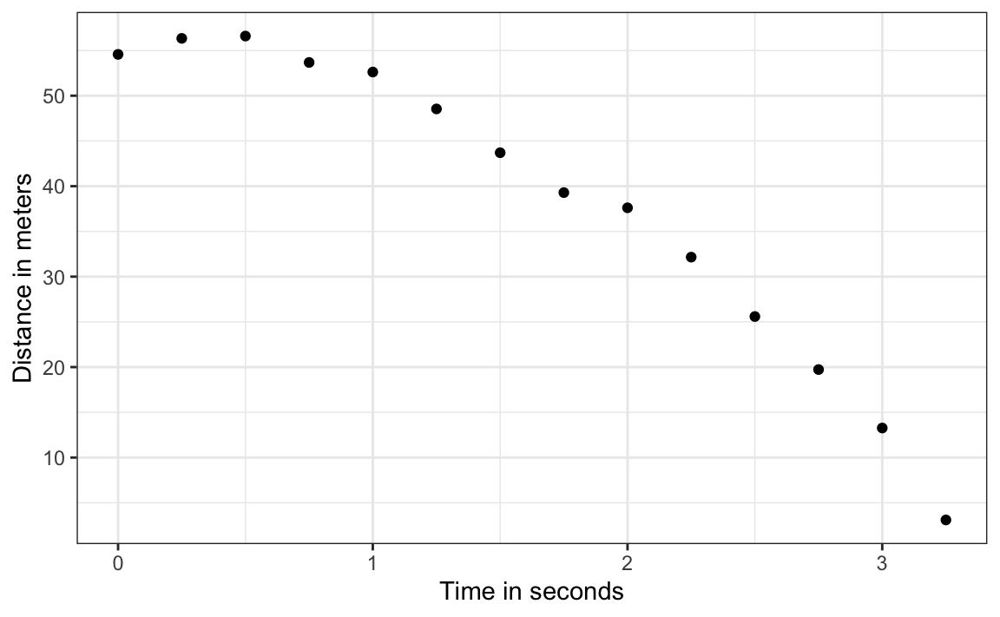

16 Measurement error models
Another major application of linear models occurs in measurement errors models. In these situations, non-random covariates, such as time, are frequently encountered, with randomness often arising from measurement errors rather than from sampling or inherent natural variability.
16.1 Example: modeling a falling object
To understand these models, imagine you are Galileo in the 16th century trying to describe the velocity of a falling object. An assistant climbs the Tower of Pisa and drops a ball, while several other assistants record the position at different times. Let’s simulate some data using the equations we currently know and adding some measurement error. The dslabs function rfalling_object generates these simulations:
The assistants hand the data to Galileo, and this is what he sees:
falling_object |>
ggplot(aes(time, observed_distance)) +
geom_point() +
ylab("Distance in meters") +
xlab("Time in seconds")
Galileo does not know the exact equation, but by looking at the plot above, he deduces that the position should follow a parabola, which we can write like this:
\[ f(x) = \beta_0 + \beta_1 x + \beta_2 x^2 \]
The data does not fall exactly on a parabola. Galileo knows this is due to measurement error. His helpers make mistakes when measuring the distance. To account for this, he models the data with:
\[ Y_i = \beta_0 + \beta_1 x_i + \beta_2 x_i^2 + \varepsilon_i, i=1,\dots,n \]
with \(Y_i\) representing distance in meters, \(x_i\) representing time in seconds, and \(\varepsilon\) accounting for measurement error. The measurement error is assumed to be random, independent from each other, and having the same distribution for each \(i\). We also assume that there is no bias, which means the expected value \(\mbox{E}[\varepsilon] = 0\).
Note that this is a linear model because it is a linear combination of known quantities (\(x\) and \(x^2\) are known) and unknown parameters (the \(\beta\)s are unknown parameters to Galileo). Unlike our previous examples, here \(x\) is a fixed quantity; we are not conditioning.
16.2 Estimating parameters with least squares
To pose a new physical theory and start making predictions about other falling objects, Galileo needs actual numbers, rather than unknown parameters. Using LSE seems like a reasonable approach. How do we find the LSE?
LSE calculations do not require the errors to be approximately normal. The lm function will find the \(\beta\)s that will minimize the residual sum of squares:
fit <- falling_object |>
mutate(time_sq = time^2) |>
lm(observed_distance~time+time_sq, data = _)
tidy(fit)
#> # A tibble: 3 × 5
#> term estimate std.error statistic p.value
#> <chr> <dbl> <dbl> <dbl> <dbl>
#> 1 (Intercept) 56.1 0.861 65.1 1.38e-15
#> 2 time -0.618 1.23 -0.503 6.25e- 1
#> 3 time_sq -4.72 0.365 -12.9 5.37e- 8Let’s check if the estimated parabola fits the data. The broom function augment allows us to do this easily:
augment(fit) |>
ggplot() +
geom_point(aes(time, observed_distance)) +
geom_line(aes(time, .fitted), col = "blue")Thanks to my high school physics teacher, I know that the equation for the trajectory of a falling object is:
\[ d(t) = h_0 + v_0 t - 0.5 \times 9.8 \, t^2 \]
with \(h_0\) and \(v_0\) the starting height and velocity, respectively. The data we simulated above followed this equation, adding measurement error to simulate n observations for dropping the ball \((v_0=0)\) from the tower of Pisa \((h_0=55.86)\).
These are consistent with the parameter estimates:
tidy(fit, conf.int = TRUE)
#> # A tibble: 3 × 7
#> term estimate std.error statistic p.value conf.low conf.high
#> <chr> <dbl> <dbl> <dbl> <dbl> <dbl> <dbl>
#> 1 (Intercept) 56.1 0.861 65.1 1.38e-15 54.2 58.0
#> 2 time -0.618 1.23 -0.503 6.25e- 1 -3.33 2.09
#> 3 time_sq -4.72 0.365 -12.9 5.37e- 8 -5.52 -3.92The Tower of Pisa height is within the confidence interval for \(\beta_0\), the initial velocity 0 is in the confidence interval for \(\beta_1\) (note the p-value is larger than 0.05), and the acceleration constant is in a confidence interval for \(-2 \times \beta_2\).
16.3 Exercises
1. Plot CO2 levels for the first 12 months of the co2 dataset and notice it seems to follow a sin wave with a frequency of 1 cycle per month. This means that a measurement error model that might work is
\[ y_i = \mu + A \sin(2\pi \,t_i / 12 + \phi) + \varepsilon_i \] with \(t_i\) the month number for observation \(i\). Is this a linear model for the parameters \(mu\), \(A\) and \(\phi\)?
2. Using trigonometry, we can show that we can rewrite this model as:
\[ y_i = \beta_0 + \beta_1 \sin(2\pi t_i/12) + \beta_2 \cos(2\pi t_i/12) + \varepsilon_i \]
Is this a linear model?
3. Find least square estimates for the \(\beta\)s using lm. Show a plot of \(y_i\) versus \(t_i\) with a curve on the same plot showing \(\hat{Y}_i\) versus \(t_i\).
4. Now fit a measurement error model to the entire co2 dataset that includes a trend term that is a parabola as well as the sine wave model.
5. Run diagnostic plots for the fitted model and describe the results.